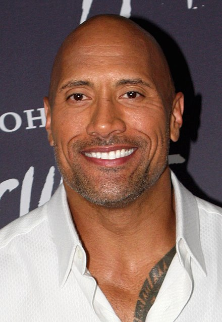

Dwayne Douglas Johnson (born May 2, 1972), also known by his ring name The Rock, is an American actor, producer, businessman, and former professional wrestler. Widely regarded as one of the greatest professional wrestlers of all time, he was integral to the development and success of the WWE during the Attitude Era, an industry boom period in the late 1990s and early 2000s. Johnson wrestled for WWF/E for eight years prior to pursuing an acting career and during his wrestling career. His films have grossed over $3.5 billion in North America and over $10.5 billion worldwide, making him one of the world's highest-grossing and highest-paid actors.
| Dwayne Johnson | |
|---|---|
|  Atkinson at the premiere for San Andreas in September 2018 |
|
| Birth Name | Dwayne Douglas Johnson |
| Born | 5 May 1972 (age 50) Hayward, California, U.S |
| Medium | TV - Film |
| Alma Mater | University of Miami (BGS) |
| Years Active | 1996 - Present |
| Spouses | Danny Garcia (m. 1997; div. 2008) Lauren Hashian (m. 2019) |
| Ring Name(s) | Dwayne Johnson Flex Kavana The Rock |
| Debut | November 17, 1996 |
| Signature | Dwayne Johnson |
| Dwayne Johnson's Voice
|
|